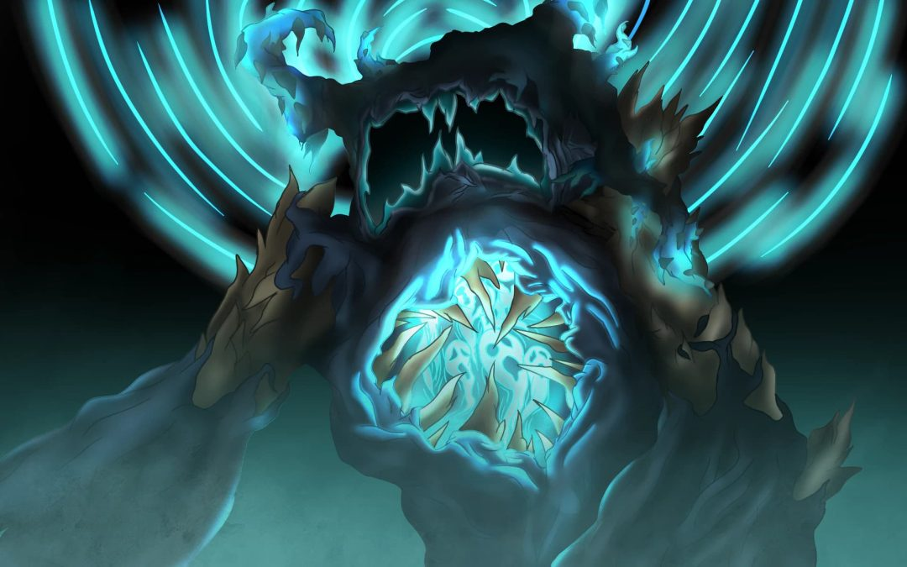

Bienvenue dans la deuxième théorie
La théorie des Cités des Abîmes dans Minecraft, qui suggère qu'elles infecteraient le Monde Normal, s'inscrit dans le cadre des spéculations des joueurs autour des éléments mystérieux et peu expliqués du jeu.
L'idée que les Cités des Abîmes infecteraient le Monde Normal découle de plusieurs éléments du jeu : Corruption et invasion des Abîmes : Les joueurs ont souvent associé l’apparition de structures comme les Cités des Abîmes à une forme de "corruption" ou d'invasion. Cette corruption pourrait être une infection qui gagne progressivement du terrain dans l'Overworld, affectant le monde normal en créant des anomalies, des créatures bizarres ou en transformant certains biomes.
La théorie des Cités des Abîmes infectant le Monde Normal reste populaire car Minecraft est un jeu très axé sur l’exploration et la découverte de mystères non résolus. L’ajout de structures comme les Cités des Abîmes, ou d’autres éléments liés au Void et à l'End, a alimenté les spéculations des joueurs sur un futur scénario où ces régions envahiraient peu à peu l'Overworld, créant ainsi des événements apocalyptiques et des changements dans le monde du jeu. Cela reste une théorie non confirmée, mais elle trouve un écho dans la nature mystérieuse et parfois inquiétante de certains éléments du jeu.